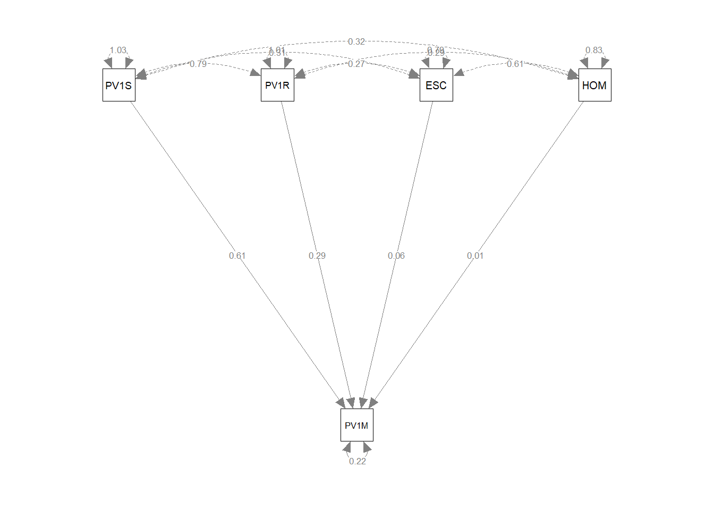
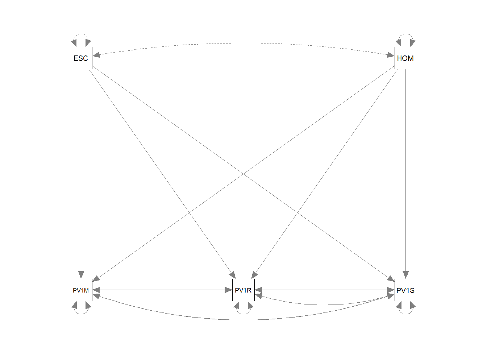
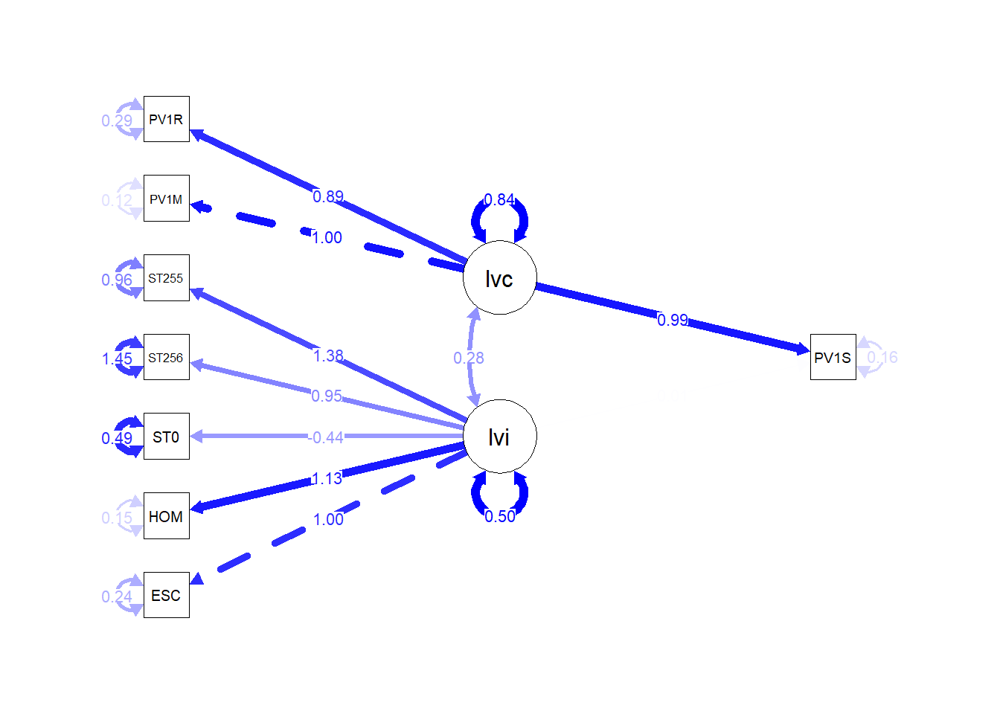
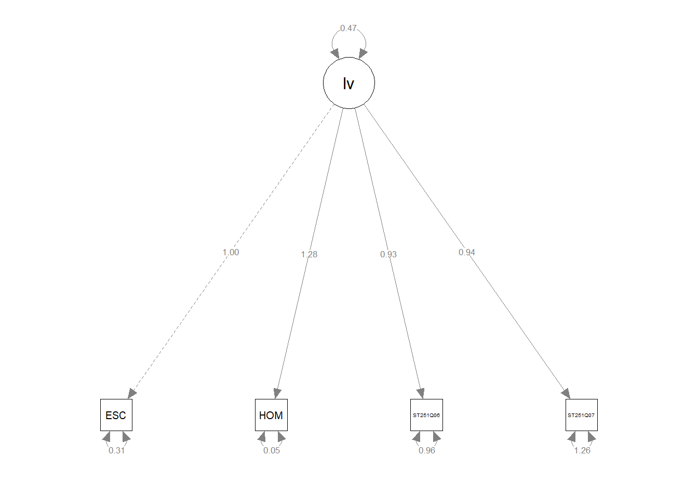

# Load lavaan to create the SEM and semPlot to draw path diagrams
library(lavaan)
library(semPlot)
# Create a subset of PISA data related to the UK containing the dependent variable of interest (PV1MATH) and the independent variables we are interested in
UKdata<-PISA_2022 %>%
select(CNT, PV1SCIE, PV1MATH, PV1READ, ESCS, HOMEPOS, ST004D01T)%>%
filter(CNT=="United Kingdom")
# lavaan requires numeric variables as input, gender is a character varibale in the data.frame so convert it.
UKdata$ST004D01T<-as.numeric(UKdata$ST004D01T)SEM
1 Structural Equation Modelling
Structural Equation Modelling (SEM) is an approach to represent the correlations between a number of variables linked to some phenomenon. A dependent variable (for example, scores on some test) might be linked to a number of independent variables (for example, hours of study, teacher’s level of experience, etc.). A powerful aspect of SEM is that it can be used to construct latent variables - variables which have explanatory usefulness but can’t be measured directly.
For example, a researcher might wish to investigate how home environment impacts students’ mathematics achievement. There is no single variable, no single score, that can be measured to say a young person’s home environment is a 7/10 or a 3/10. We might then consider their home environment a latent variable. We imagine that the nature of the circumstances in their home impacts their learning, but we cannot directly report the level of the home environment as a variable.
SEM allows us to propose a latent variable, like home environment, and calculate the contribution of a number of variables we can measure (e.g. the number of books in the home, parents’ occupation and level of education, family wealth, etc.) to the latent variable.
1.0.1 A simple structural model
Researchers use SEM to determine the correlations between a number of variable in a data set. It allows the relationship between multiple variables to be taken into account.
In the PISA data set, in the context of data related to UK students achievement in mathematics, a researcher might be interested in building a model of mathematics (PV1MATH) score by a number of variables in the data set, for example, reading score PV1READ), science score (PV1SCIE), family cultural capital (the index of economic, social and cultural status ESCS), wealth (WEALTH) and gender (ST004D01T). SEM can be used to represent the relationship between these variables and students’ mathematics achievement.
To create the SEM we will use the lavaan package - lavaan is a contraction of Latent Variable Analysis and allows us to fit a number of different SEMs to data. We will also need to install the semPlot package. The relationships between variables in SEMs are often represented as path diagrams - representations in which variables are represented as squares or circles and arrows labelled with correlation coefficients join the variables to represent the relationships.semPlot allows use to draw path diagrams
1.1 Model Syntax
To create the SEM of UK mathematics achievement we first create a subset data.frame of UK data, UKdata. As lavaan uses numeric variables we need to convert gender (ST004D01T) to a numeric variable.
The first step is to create the model. Models in lavaan are represented as a dependent variable y, linked to a number of independent variables x1, x2, x3, etc. The ~ symbol is the regression operator. A simple regression forumla might then take the form of:
y ~ x1 + x2 + x3
To indicate a variable is a latent variable we use the =~ operator. So to define a model in which the latent variable f1 varies with three indepdent variables we would write:
f1 =~ x1 + x2 + x3
In some cases, the independent variables may correlate. For example, if we are investigating mathematics achievement (the dependent variable, y), by looking at the independent variables of reading (x1) and science score (x2), it may be the case that reading and science cores covary (that is changes to one impacts the other). In this case, we can specify covariance in our model by stating:
y ~ x1 + x2 The regression model x1 ~ x2 Indicating the covariance
In our case, considering UK mathematics achievement, we can set up a model that mathematics score PV1MATH varies with science score PV1SCIE, reading score PV1READ, cultural resources in the home ESCS, a wealth proxy measure, HOMEPOS and gender ST004D01T: model<-"PV1MATH ~ PV1SCIE + PV1READ + ESCS + HOMEPOS"
We then pass the model, and the data.frame to the sem function: fit<-sem(model, data=UKdata). This produces a model as the ouput fit. To see the results we call summary(fit)
lavaan 0.6.17 ended normally after 1 iteration
Estimator ML
Optimization method NLMINB
Number of model parameters 5
Used Total
Number of observations 11083 12972
Model Test User Model:
Test statistic 0.000
Degrees of freedom 0
Parameter Estimates:
Standard errors Standard
Information Expected
Information saturated (h1) model Structured
Regressions:
Estimate Std.Err z-value P(>|z|)
PV1MATH ~
PV1SCIE 0.565 0.007 85.604 0.000
PV1READ 0.267 0.006 41.953 0.000
ESCS 5.432 0.734 7.404 0.000
HOMEPOS 1.027 0.716 1.434 0.151
Variances:
Estimate Std.Err z-value P(>|z|)
.PV1MATH 2006.033 26.948 74.441 0.000In the regressions table, the function returns the value of the regression coefficients for each independent variable, and the P value (P(>|z|)). Note in the model above all the independent variables are significant, but the largest loading comes from the WEALTH variable, with the science (PV1SCIE) and reading (PV1READ) scores contributing comparatively little.
Finally, to produce a visual representation of the model, we pass our model, fit to the semPaths function (from the semPlot package we loaded above). We can specify was we want displayed on the lines, in this case the estimate of the regression coefficients between the variables.

In path diagrams, directly measured variables, manifest variables, are shown as squares. Latent variables are represented as circles. Single headed arrows represent the regression effects between variables. The curved arrows starting and ending on a square or circle indicate the variances of those variables. When curved arrows start and end on different variables, they represent covariance.
One issue to note here is the difference in the variance for the science and mathematics scores. PV1SCIE, PV1READ and PV1MATH are test scores and so have a large variance (the maximum and minimum science scores, for example, are 0.0 and 895.4). The variance of the two test variables is much greater that for HOMEPOS (Min=-10.0741 mean=-0.4447, Max=15.240) and ESCS (Min=-6.841 mean=-0.310, Max=7.380).
To resolve this difference, we can use the scale function to create a similar scale for PV1SCIE, PV1MATH and PV1READ. The scale function sets the mean of the variable to 0 and the variance to 1.
UKdata$PV1READ<-scale(UKdata$PV1READ)
UKdata$PV1MATH<-scale(UKdata$PV1MATH)
UKdata$PV1SCIE<-scale(UKdata$PV1SCIE)
fit<-sem(model, data=UKdata)
summary(fit)lavaan 0.6.17 ended normally after 1 iteration
Estimator ML
Optimization method NLMINB
Number of model parameters 5
Used Total
Number of observations 11083 12972
Model Test User Model:
Test statistic 0.000
Degrees of freedom 0
Parameter Estimates:
Standard errors Standard
Information Expected
Information saturated (h1) model Structured
Regressions:
Estimate Std.Err z-value P(>|z|)
PV1MATH ~
PV1SCIE 0.607 0.007 85.604 0.000
PV1READ 0.295 0.007 41.953 0.000
ESCS 0.057 0.008 7.404 0.000
HOMEPOS 0.011 0.008 1.434 0.151
Variances:
Estimate Std.Err z-value P(>|z|)
.PV1MATH 0.222 0.003 74.441 0.000
Scaling the test scores gives a more balanced model.
We can make the model more complex, by adding that two or our independent variables, reading (PV1READ) and science (PV1SCIE) scores may co-vary, and vary with other independent variables.
model<-"PV1MATH ~ PV1SCIE + PV1READ + ESCS + HOMEPOS
PV1READ ~~ PV1SCIE
PV1READ ~ PV1SCIE + PV1MATH + ESCS + HOMEPOS
PV1SCIE ~ PV1READ + PV1MATH + ESCS + HOMEPOS"
fit<-sem(model, data=UKdata)
summary(fit)lavaan 0.6.17 ended normally after 23 iterations
Estimator ML
Optimization method NLMINB
Number of model parameters 16
Used Total
Number of observations 11083 12972
Model Test User Model:
Test statistic NA
Degrees of freedom -4
P-value (Unknown) NA
Parameter Estimates:
Standard errors Standard
Information Expected
Information saturated (h1) model Structured
Regressions:
Estimate Std.Err z-value P(>|z|)
PV1MATH ~
PV1SCIE 0.454 NA
PV1READ 0.171 NA
ESCS 0.113 NA
HOMEPOS 0.071 NA
PV1READ ~
PV1SCIE 0.242 NA
PV1MATH 0.386 NA
[ reached getOption("max.print") -- omitted 7 rows ]
Covariances:
Estimate Std.Err z-value P(>|z|)
.PV1READ ~~
.PV1SCIE 0.065 NA
Variances:
Estimate Std.Err z-value P(>|z|)
.PV1MATH 0.282 NA
.PV1READ 0.383 NA
.PV1SCIE 0.340 NA 

1.1.1 Modelling a latent variable
As introduced above, we can use SEM to model a latent variable. For example, we might assume that students have some underlying variable linked to their general intelligence. However, we have no way to directly measure their general intelligence. We do have data on their achievement in science (PV1SCIE), mathematics (PV1MATH) and reading (PV1READ) we might assume that as the latent variable of general achievement increases so does achievement in science, mathematics and reading.
To perform the analysis, we use the =~ operator in our model, which indicates a latent variable. This time, our model then sets out that we are interested in a lv (latent variable) which varies with science (PV1SCIE), mathematics (PV1MATH) and reading (PV1READ) scores:
model<-“lv =~ PV1SCIE + PV1READ + PV1MATH”
Then we run the model using sem in the same way as above, and plot the model using semPaths.
# For a latent variable
# =~ means a latent variable
model<-"lv =~ PV1SCIE + PV1READ + PV1MATH"
fit<-sem(model, data=UKdata)
summary(fit)lavaan 0.6.17 ended normally after 18 iterations
Estimator ML
Optimization method NLMINB
Number of model parameters 6
Number of observations 12972
Model Test User Model:
Test statistic 0.000
Degrees of freedom 0
Parameter Estimates:
Standard errors Standard
Information Expected
Information saturated (h1) model Structured
Latent Variables:
Estimate Std.Err z-value P(>|z|)
lv =~
PV1SCIE 1.000
PV1READ 0.919 0.006 143.596 0.000
PV1MATH 1.015 0.006 175.355 0.000
Variances:
Estimate Std.Err z-value P(>|z|)
.PV1SCIE 0.145 0.003 43.323 0.000
.PV1READ 0.278 0.004 66.360 0.000
.PV1MATH 0.119 0.003 36.723 0.000
lv 0.855 0.013 67.872 0.000
The mode raises the question of how strong does correlation between independent variables and a proposed latent variable need to be. Cho and colleagues (cho2020?) suggest that:
“When N = 100, researchers may choose a GFI [Meaning Goodness-of-Fit Index] cutoff value of .89 …When N > 100, researchers may choose a GFI cutoff value of .93” (cho2020?)
We can develop a more complex latent variable model. Let us assume that UK students reading scores depend on two latent variables, home environment (e.g. number of books, parental level of education etc) and cognitive ability (e.g. as reported by science and mathematics scores). Here are some relevant variables:
| Item name | Description |
|---|---|
| ST005Q01JA | What is the |
| ST007Q01JA | What is the |
| ST256Q02JA | In your home: Classic literature (e.g. |
| ST255Q01JA | How many books are there in your home? |
| HOMEPOS | Family Wealth |
# Create a UK dataframe with plausible values
UKdata<-PISA_2022%>%
select(CNT, ESCS, HOMEPOS, ST007Q01JA, ST256Q02JA, ST255Q01JA,
PV1READ, PV1SCIE, PV1MATH)%>%
filter(CNT=="United Kingdom")
# Make varibale numeric for lavan
UKdata$ST007Q01JA<-as.numeric(UKdata$ST007Q01JA)
UKdata$ST256Q02JA<-as.numeric(UKdata$ST256Q02JA)
UKdata$ST255Q01JA<-as.numeric(UKdata$ST255Q01JA)
# Scale the test scores
UKdata$PV1READ<-scale(UKdata$PV1READ)
UKdata$PV1MATH<-scale(UKdata$PV1MATH)
UKdata$PV1SCIE<-scale(UKdata$PV1SCIE)
# Propose a model with two latent variables - one related to home (lvh), the other cognitive ability (lva)
model<-"lvi =~ ESCS + HOMEPOS + ST007Q01JA + ST256Q02JA + ST255Q01JA
lvc =~ PV1MATH + PV1READ
PV1SCIE ~ lvi + lvc"
# Fit the model
fit<-sem(model, data=UKdata)
summary(fit)lavaan 0.6.17 ended normally after 32 iterations
Estimator ML
Optimization method NLMINB
Number of model parameters 18
Used Total
Number of observations 9156 12972
Model Test User Model:
Test statistic 1743.454
Degrees of freedom 18
P-value (Chi-square) 0.000
Parameter Estimates:
Standard errors Standard
Information Expected
Information saturated (h1) model Structured
Latent Variables:
Estimate Std.Err z-value P(>|z|)
lvi =~
ESCS 1.000
HOMEPOS 1.133 0.012 91.099 0.000
ST007Q01JA -0.435 0.012 -37.662 0.000
ST256Q02JA 0.947 0.020 46.529 0.000
ST255Q01JA 1.381 0.019 72.078 0.000
lvc =~
PV1MATH 1.000
[ reached getOption("max.print") -- omitted 1 row ]
Regressions:
Estimate Std.Err z-value P(>|z|)
PV1SCIE ~
lvi 0.012 0.009 1.326 0.185
lvc 0.991 0.008 121.309 0.000
Covariances:
Estimate Std.Err z-value P(>|z|)
lvi ~~
lvc 0.282 0.008 33.407 0.000
Variances:
Estimate Std.Err z-value P(>|z|)
.ESCS 0.239 0.005 46.204 0.000
.HOMEPOS 0.148 0.005 28.609 0.000
.ST007Q01JA 0.495 0.007 66.043 0.000
.ST256Q02JA 1.448 0.022 65.016 0.000
.ST255Q01JA 0.963 0.016 58.664 0.000
.PV1MATH 0.122 0.004 30.114 0.000
.PV1READ 0.293 0.005 56.485 0.000
.PV1SCIE 0.155 0.004 36.360 0.000
[ reached getOption("max.print") -- omitted 2 rows ]
Interesting features to note are a) the much higher loading of the cognitive latent variable (lvc has a loading of 0.71) than the home environment (liv, loading 0.02); b) the roughly equal contribution of mathematics and reading scores to lvb (the cognitive ability latent variable); c) and interesting to note the negative loadings of parental education (ST005, and ST007) on the home enviroment latent variable.
Note the dotted line from the ESCS variable (truncated here to ESC) indicates that ESCS is acting as a marker variable, that is, it is fixed at 1.0, and the other variables determined relative to it. The same is true for PV1MATH for the ability latent variable.
1.1.2 Formatting a path diagram
There are a number of formatting options in the semPaths function.
Starting from this plot:

- To rotate the plot (
rotation=2):
- To change the colour of the lines (
edge.color="blue") and the size of the nodes (sizeMan=8):

- To link the thickness of lines to their value (
"std"):

- To make the labels larger (
edge.label.cex = 0.8):
semPaths(fit, whatLabels = "Estimate", rotation=2, edge.color="blue",
sizeMan =5, "std", edge.label.cex = 0.8) 
- To add a title (
title("PISA path diagram")):
semPaths(fit, whatLabels = "Estimate", rotation=2, edge.color="blue",
sizeMan =5, "std", edge.label.cex = 0.8)
title("PISA path diagram")
- To give longer node names (
nodeNames=nodenames):
nodenames<-c("Economic, social and cultural status",
"Wealth","Maternal Schooling","Paternal Schooling",
"In home: classical literature","Books in home",
"Math score", "Reading score", "Science Score")
semPaths(fit, whatLabels = "Estimate", rotation=2, edge.color="blue",
sizeMan =5, "std",, edge.label.cex = 0.8, nodeNames=nodenames)
title("PISA path diagram")
1.2 Tasks
1.2.1 Task 1 - create a model of reading score
Make a SEM of reading scores in the PISA data for students in the United States. Consider co-variation between independent variables. First consider what independent variables in the data set might influence reading scores. Some potential items of interest include:
| Item name | Description |
|---|---|
| ST005Q01JA | What is the |
| ST007Q01JA | What is the |
| ST256Q02JA | In your home: Classic literature (e.g. |
| ST255Q01JA | How many books are there in your home? |
| HOMEPOS | Family Wealth |
| ESCS | Index of economic, social and cultural status |
| ST254Q02JA | How many of the following [digital devices] are in your |
| [home]: Desktop computers |
::: call-out warning
Don’t forget to convert any non-numeric variables to numeric
:::
# Using ST255Q01JA How many books are there in your home?
# ST254Q02JA How many in your home: Computers (desktop computer, portable laptop, or notebook)
USdata<-PISA_2022%>%
select(CNT, ESCS, HOMEPOS, PV1READ, ST255Q01JA, ST254Q02JA)%>%
filter(CNT=="United States")
# Making ST255Q01JA and ST012Q06NA numeric
USdata$ST255Q01JA<-as.numeric(USdata$ST255Q01JA)
USdata$ST254Q02JA<-as.numeric(USdata$ST254Q02JA)
model<-"PV1READ ~ ESCS + HOMEPOS + ST255Q01JA+ ST254Q02JA"
fit<-sem(model, data=USdata)
summary(fit)lavaan 0.6.17 ended normally after 1 iteration
Estimator ML
Optimization method NLMINB
Number of model parameters 5
Used Total
Number of observations 4163 4552
Model Test User Model:
Test statistic 0.000
Degrees of freedom 0
Parameter Estimates:
Standard errors Standard
Information Expected
Information saturated (h1) model Structured
Regressions:
Estimate Std.Err z-value P(>|z|)
PV1READ ~
ESCS 14.866 2.326 6.390 0.000
HOMEPOS 15.340 2.984 5.141 0.000
ST255Q01JA 21.151 1.413 14.965 0.000
ST254Q02JA -20.733 2.150 -9.642 0.000
Variances:
Estimate Std.Err z-value P(>|z|)
.PV1READ 9987.581 218.913 45.623 0.000
1.2.2 Task 2 - Modelling a latent variable for the home environment
There are a number of variables in the PISA data set that could be used to model the home environment (e.g. Number of books in the home, number of computers, etc.). Using the home environment for UK students as a latent variable, create a model of the home environment.
::: call-out warning
Don’t forget to convert any non-numeric variables to numeric
:::
# Using ST251Q06JA How many of these items are there at your [home]: Musical instruments (e.g. guitar, piano, [country-specific example])
# and ST251Q07JA How many of these items are there at your [home]: Works of art (e.g. paintings, sculptures, [country-specific example])
UKdata<-PISA_2022%>%
select(CNT, ESCS, HOMEPOS, ST251Q06JA, ST251Q07JA)%>%
filter(CNT=="United Kingdom")
# Making variables numeric
UKdata$ST251Q06JA<-as.numeric(UKdata$ST251Q06JA)
UKdata$ST251Q07JA<-as.numeric(UKdata$ST251Q07JA)
model<-"lv =~ ESCS + HOMEPOS + ST251Q06JA + ST251Q07JA "
fit<-sem(model, data=UKdata)
summary(fit)lavaan 0.6.17 ended normally after 23 iterations
Estimator ML
Optimization method NLMINB
Number of model parameters 8
Used Total
Number of observations 10916 12972
Model Test User Model:
Test statistic 86.359
Degrees of freedom 2
P-value (Chi-square) 0.000
Parameter Estimates:
Standard errors Standard
Information Expected
Information saturated (h1) model Structured
Latent Variables:
Estimate Std.Err z-value P(>|z|)
lv =~
ESCS 1.000
HOMEPOS 1.278 0.016 82.129 0.000
ST251Q06JA 0.930 0.016 58.374 0.000
ST251Q07JA 0.936 0.018 52.611 0.000
Variances:
Estimate Std.Err z-value P(>|z|)
.ESCS 0.312 0.006 51.116 0.000
.HOMEPOS 0.054 0.007 7.564 0.000
.ST251Q06JA 0.960 0.014 70.282 0.000
.ST251Q07JA 1.263 0.018 71.398 0.000
lv 0.474 0.011 44.235 0.000
1.2.3 Task 3 - building a more complex latent varibale SEM
You believe that there are two latent variables underlying UK students’ performance in science - a science self-identity variable (related to the home environment, for example, gender, parents’ level of education) and a cognitive ability variable (indicated by performance in other subjects). Propose a model of science performance based on these two latent variables - linking each latent variable to multiple independent variables. Determine how much variance your model explains
::: call-out warning
Don’t forget to convert any non-numeric variables to numeric and consider scaling the test scores
:::
# Create a UK data frame with plausible values
UKdata<-PISA_2022%>%
select(CNT, ESCS, HOMEPOS, ST005Q01JA, ST007Q01JA, PV1READ, PV1SCIE,
PV1MATH, ST004D01T)%>%
filter(CNT=="United Kingdom")
# Convert to numeric where not numeric
UKdata$ST005Q01JA<-as.numeric(UKdata$ST005Q01JA)
UKdata$ST007Q01JA<-as.numeric(UKdata$ST007Q01JA)
UKdata$ST004D01T<-as.numeric(UKdata$ST004D01T)
# Scale the test scores
UKdata$PV1READ<-scale(UKdata$PV1READ)
UKdata$PV1MATH<-scale(UKdata$PV1MATH)
UKdata$PV1SCIE<-scale(UKdata$PV1SCIE)
# Propose a model with two latent variables - one related to identity (lvi), the other ability (lva)
model<-"lvi =~ ESCS + HOMEPOS + ST005Q01JA + ST007Q01JA + ST004D01T
lva =~ PV1MATH + PV1READ
PV1SCIE ~ lvi + lva"
# Fit the model
fit<-sem(model, data=UKdata)
summary(fit)lavaan 0.6.17 ended normally after 34 iterations
Estimator ML
Optimization method NLMINB
Number of model parameters 18
Used Total
Number of observations 9683 12972
Model Test User Model:
Test statistic 1738.699
Degrees of freedom 18
P-value (Chi-square) 0.000
Parameter Estimates:
Standard errors Standard
Information Expected
Information saturated (h1) model Structured
Latent Variables:
Estimate Std.Err z-value P(>|z|)
lvi =~
ESCS 1.000
HOMEPOS 0.833 0.010 79.702 0.000
ST005Q01JA -0.430 0.008 -51.306 0.000
ST007Q01JA -0.437 0.009 -47.015 0.000
ST004D01T 0.001 0.006 0.175 0.861
lva =~
PV1MATH 1.000
[ reached getOption("max.print") -- omitted 1 row ]
Regressions:
Estimate Std.Err z-value P(>|z|)
PV1SCIE ~
lvi 0.004 0.007 0.518 0.605
lva 0.991 0.008 131.633 0.000
Covariances:
Estimate Std.Err z-value P(>|z|)
lvi ~~
lva 0.312 0.009 33.677 0.000
Variances:
Estimate Std.Err z-value P(>|z|)
.ESCS 0.046 0.007 7.049 0.000
.HOMEPOS 0.327 0.007 49.672 0.000
.ST005Q01JA 0.366 0.005 67.130 0.000
.ST007Q01JA 0.470 0.007 67.762 0.000
.ST004D01T 0.250 0.004 69.581 0.000
.PV1MATH 0.122 0.004 30.788 0.000
.PV1READ 0.296 0.005 57.937 0.000
.PV1SCIE 0.157 0.004 37.728 0.000
[ reached getOption("max.print") -- omitted 2 rows ]